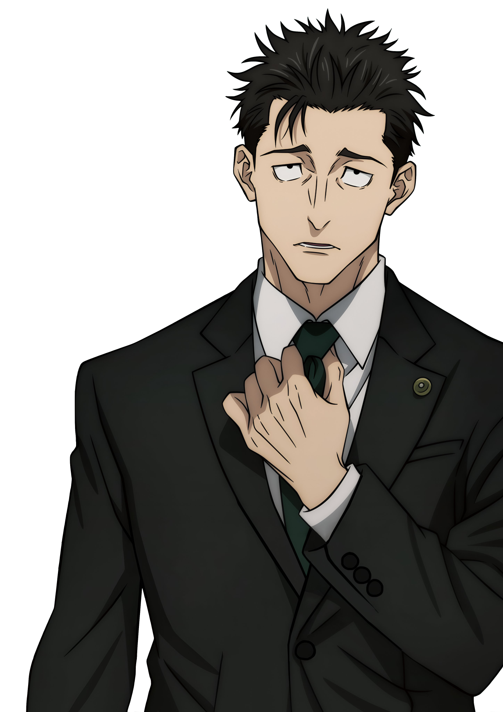
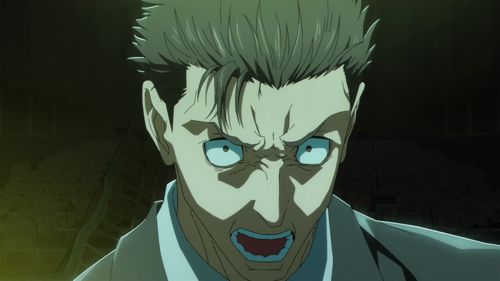
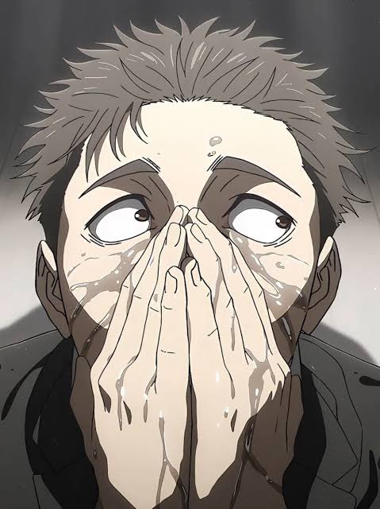

DEPARTAMENTO DE SINGULARIDADE HUMANA
Vamos ver
o que você tem.
Uma entrevista. Oito perguntas por sessão: sete sorteadas de um acervo com 39 questões comuns, mais a pergunta de superpoderes. Um advogado cansado tentando entender suas escolhas sem transformar tudo em acusação.
◷ 2–3 MINUTOS
▣ Sem conta, sem envio de respostas. O resultado é entretenimento, não estatística populacional.
INTERVIEWER / HIROMI HIGURUMA



CASE FILE
40 QUESTIONS
40 QUESTIONS
CURRENT MOOD / ENTEDIADO
“
Vamos começar. Espero que não seja necessário um segundo depoimento.
— HIGURUMAENTREVISTA DE ENTRETENIMENTO · PERGUNTAS ALEATÓRIASREGISTRO LOCAL